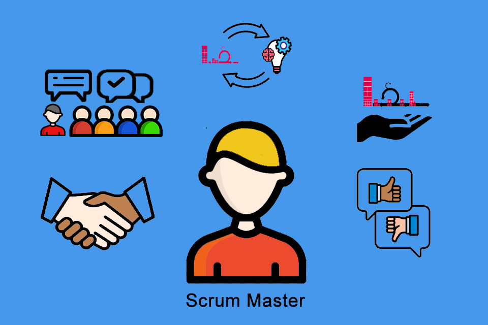

Scrum Master

O Scrum Master desempenha várias funções fundamentais para o sucesso da equipe Scrum. Ele atua como
facilitador, garantindo que as reuniões, como o Daily Standup e o planejamento de sprint, sejam
conduzidas
conforme os princípios do Scrum, e como coach, ajudando a equipe a entender e aplicar os valores ágeis,
resolvendo problemas que possam surgir. Além disso, como removedor de obstáculos, ele elimina barreiras
que
possam impedir o progresso da equipe e protege a integridade do Scrum como guardião do processo,
promovendo
a autonomia da equipe e facilitando a colaboração na tomada de decisões. Por fim, o Scrum Master
catalisa a
melhoria contínua, facilitando retrospectivas e incentivando a equipe a experimentar novas abordagens
para
alcançar melhores resultados, garantindo assim que a equipe Scrum opere de forma eficaz e produtiva,
promovendo uma cultura de colaboração, autonomia e melhoria contínua.
Facilitador
O Scrum Master atua como um facilitador, ajudando a equipe a entender e adotar os princípios e
práticas
do Scrum. Ele facilita reuniões, como reuniões diárias (Daily Standup), planejamento de sprint,
revisões
de sprint e retrospectivas, garantindo que sigam os princípios do Scrum.
Coach
O Scrum Master é um coach para a equipe Scrum, ajudando-os a entender e aplicar os valores e
princípios
ágeis. Eles fornecem orientação sobre como implementar o Scrum de maneira eficaz e ajudam a resolver
quaisquer problemas ou obstáculos que a equipe possa enfrentar.
Removedor de Obstáculos
O Scrum Master trabalha para remover obstáculos que possam impedir a equipe de atingir seus objetivos
durante o sprint. Isso pode envolver coordenar com partes interessadas externas, resolver conflitos
internos, ou fornecer recursos necessários para a equipe.
Guardião do Processo
O Scrum Master protege o processo Scrum e garante que a equipe siga as práticas e valores ágeis. Eles
ajudam a garantir que a equipe compreenda e siga os princípios do Scrum, mantendo a integridade do
processo e evitando desvios ou modificações que possam prejudicar sua eficácia.
Facilitador de Autonomia
O Scrum Master ajuda a equipe a se tornar auto-organizada, incentivando a tomada de decisões
colaborativa
e a responsabilidade compartilhada. Eles ajudam a equipe a identificar maneiras de melhorar seu
processo
e desempenho, encorajando a autogestão e a autoavaliação.
Catalisador para Melhoria Contínua
O Scrum Master promove a melhoria contínua dentro da equipe Scrum, facilitando retrospectivas
eficazes e
ajudando a implementar ações corretivas. Eles incentivam a equipe a refletir sobre seu desempenho,
identificar áreas de oportunidade e experimentar novas abordagens para alcançar resultados melhores.